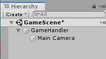
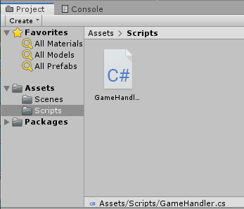
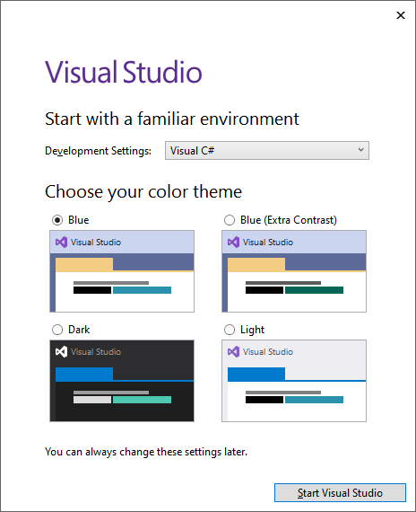
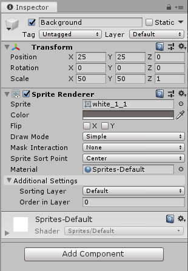
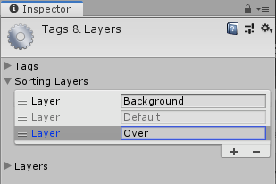
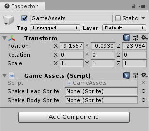
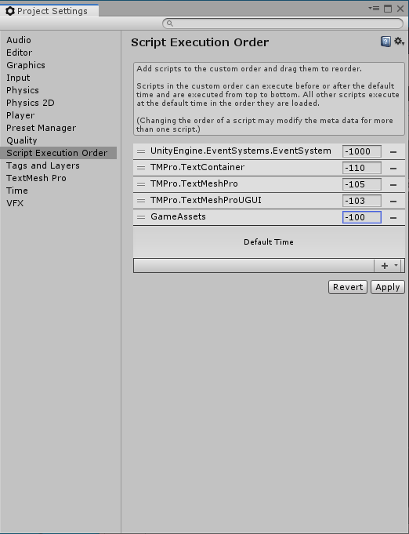

Matopeli
Yleistä
Aloita uusi tyhjä projekti, voit käyttää C-asemaa tai muistitikkua tallennusvälineenäsi.
Matopeli
- Valitse Assets / Scenes ja vaihda Scenen nimi (SampleScene -> GameScene)
- Valitse kamera ja tarkistetaan ominaisuuksista kameran sijainti (Projection), tulisi olla Orthographic)
- Kameran koko (Size) tarkoittaa kuinka paljon nähdään tällä hetkellä (oletus 5 eli -5 - +5), voit kokeilla vaihdella tätä ja tarkistaa miten kameran alue muuttuu. Aseta kooksi 50.
- Hiiren oikea GameScenen Hierarchy-ikkunassa, valitse Create Empty ja muuta GameObject-objektin nimeksi GameHandler. Tämän olion on tarkoitus hoitaa pelin toimintalogiikka. Aseta sijainniksi (Position) Inspector-valikossa 0,0,0.
- Raahaa kamera GameHandlerin sisälle

- Luo uusi Assets-kansion alle uusi kansio Scripts ja sinne C# Script-tiedosto GameHandler

- Tuplaklikkaa skriptiä ja se avautuu Visual Studioon. Aluksi sinun kannattaa hylätä kirjautuminen ja valita Development Settings -kohdassa Visual C#.

void Start() { Debug.Log("GameHandler.Start"); } - Seuraavaksi lisätään skripti objektille. Klikkaa Hierarchy-ikkunasta GameHandler aktiiviseksi ja voit raahata GameHandler-skriptin uudeksi komponentiksi. Toinen tapa on valita Add Component.
- Suorita ohjelma (Play) niin konsolissa tulisi näkyä viesti GameHandler.Start
- Taustakuvan lisääminen: tee aluksi uusi kansio Textures Assets-kansion alle. Raahaa kansioon valmiit materiaalit tai tee itse paremmat (FoodApple.png, SnakeBody.png, SnakeHead.png, White_1_1.png).
- Valitse white_1_1.png-kuva ja aseta sen Pixels Per Unit arvoksi 1. Aseta muille kuville kooksi 180 pikseliä.
Lisää uusi GameObject, aseta nimeksi Background (Hierarchy-ikkuna, hiiren oikea, Create Empty). Lisää tälle objektille uusi komponentti Sprite Renderer, raahaa white_1_1-kuva tämän komponentin Spriteksi.

Aseta vielä väriksi harmaa ja Scale-kohdassa kooksi 50 x 50. Aseta X-koordinaatiksi 25, Y-koordinaatiksi 25 ja Z arvolle 0.
- Lisää uusi Game Object, muuta nimeksi Snake. Lisää Sprite Renderer ja raahaa SnakeBody-kuva Spriteksi.
- Lisätään vielä Sorting layer käärmeelle. Valitse Add Sorting Layer ja lisää uusi layer. Nimeä se nimellä Background. Siirrä ylimmäksi. Lisää myös Over-layer jota voidaan käyttää korostukseen tarvittaessa.

-
Lisätään aloitusviesti:
void Start() { Debug.Log("GameHandler.Start"); // Lisää tämä rivi: EditorUtility.DisplayDialog("Message", "Peli alkaa!", "OK", ""); } -
Lisätään uusi luokka joka kokoaa eri Assets-tiedot yhteen. Lisää aluksi Scripts-kansioon uusi skripti (GameAssets).
public class GameAssets : MonoBehaviour { // jotta luokkaa voidaan käsitellä ulkoa päin: public static GameAssets instance; private void Awake() { instance = this; } // sisältö tässä vaiheessa: public Sprite snakeHeadSprite; public Sprite snakeBodySprite; } - Tarvitaan lisäksi uusi Game Object nimeltä GameAssets ja raahataan tälle skriptiksi äsken tehty skripti.

Nyt voidaan luodaan koodissa uusia GameObject-olioita:
void Start() { Debug.Log("GameHandler.Start"); EditorUtility.DisplayDialog("Message", "Peli alkaa!", "OK", ""); // Lisätään nyt tämä: GameObject snakeHeadGameObject = new GameObject(); SpriteRenderer snakeSpriteRenderer = snakeHeadGameObject.AddComponent(); snakeSpriteRenderer.sprite = GameAssets.instance.snakeHeadSprite; } Kokeile käynnistää nyt peli ja tarkista ilmestyykö koodissa toinen käärme näkyviin.
-
Jotta tämä GameAssets käynnistyisi ensimmäisenä lisätään se projektin asetuksiin: File / Project Settings / Script Execution Order, raahaa GameAssets tänne ja siirrä ennen DefaultTime-osiota.

{kind=link}
{kind=link}
{kind=link}
{kind=link}
Lähteitä ja linkkejä
- Lähteenä käytety Simple 2D Game in Unity -videosarjaa.